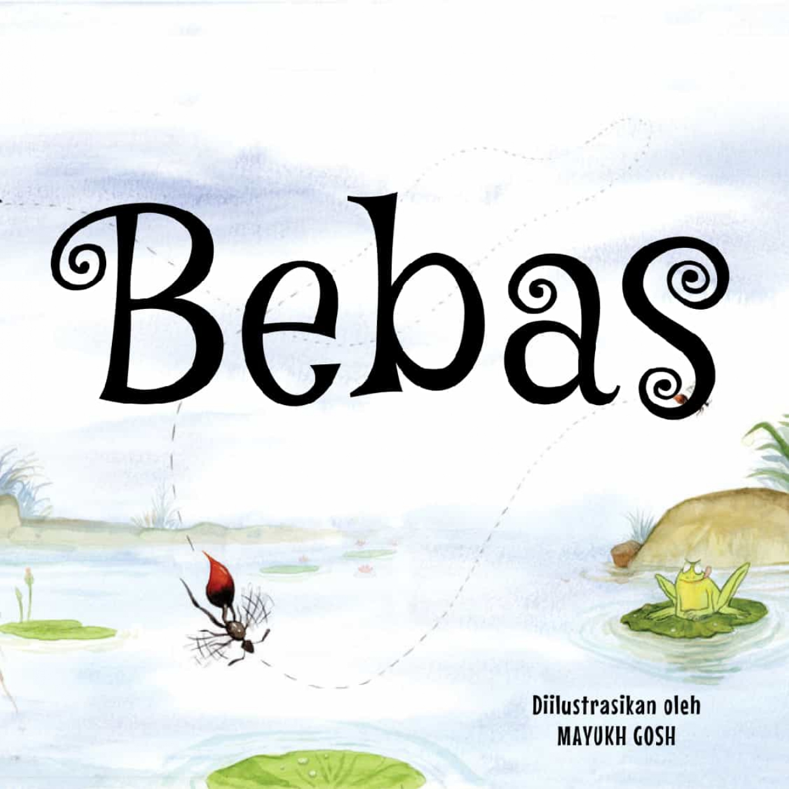

Kucing di Pegunungan Ghat

Zepi Keliling Indonesia

Kikan dan Kawan-Kawan

Petualangan Menakjubkan

Monster, Kembalikan Kucingku!

Mili Keliling Kota

Misi Baru Aya

Bebas

Modo Ingin Pulang

Kanan atau Kiri?